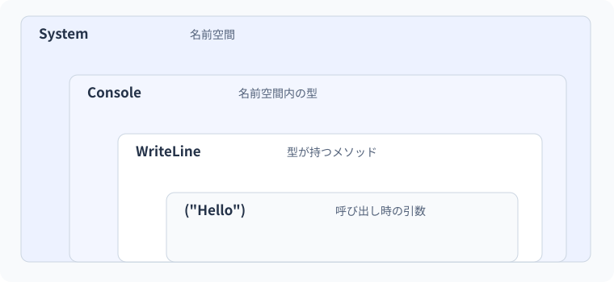

02 Program・名前空間・using — 詳細解説
型名が解決される範囲。
図解：型名が解決される範囲

入口・名前・ファイルは別々の仕組み
ソースコードが増えると、「どこから動き始めるのか」「この名前はどの型を表すのか」「どのファイルがビルド対象なのか」を区別する必要が出てきます。入口とはプログラム開始時に実行される場所です。名前空間とは型の名前を整理し、同じ短い名前を区別する仕組みです。ファイルは人がコードを分割して保存する単位です。この三つは関連しますが、一対一に一致するものではありません。
C#の型は、値の種類と利用できる操作を定めます。Consoleも.NETが用意した型です。System.ConsoleのSystemは名前空間、Consoleは型の名前、WriteLineはその型が提供するメソッドの名前です。メソッドは名前の付いた処理で、呼び出すとかっこの中の値を渡して処理を依頼します。
型名をフルネームで毎回書けば曖昧さは減りますが、長くなります。using System;は、そのファイルでSystem内の型を短い名前で参照できるようにする宣言です。部品をインストールしたり、すべての型の処理を実行したりする命令ではありません。名前空間を探す範囲をコンパイラーへ知らせています。
トップレベル文とMainの対応
トップレベルステートメントは、外側のProgramクラスやMainメソッドを自分で書かず、入口で行う文を直接書く形式です。コンパイラーが入口を含む構造を生成します。入口が存在しないわけでも、ファイル内のすべての宣言が順番に実行されるわけでもありません。
Console.WriteLine("入口");
PrintMessage();
Console.WriteLine("終了");
static void PrintMessage()
{
Console.WriteLine("呼び出された処理");
}期待される出力：
入口
呼び出された処理
終了PrintMessageの定義は、その場所に到達したから自動実行されるものではありません。二行目の呼び出しでメソッド本体へ移り、Console.WriteLineを行い、終わったら呼び出した場所の次へ戻ります。この定義はトップレベル文から利用できるローカル関数です。staticは周囲のローカル変数へ暗黙に依存しないことを示します。引数や戻り値はLesson 07で拡張します。
同じ内容を明示的な入口で書くと次のようになります。これは上の例と入れ替えて使用する独立した例です。一つのプロジェクトに両方の入口を追加する練習ではありません。
using System;
internal class Program
{
private static void Main()
{
Console.WriteLine("入口");
PrintMessage();
Console.WriteLine("終了");
}
private static void PrintMessage()
{
Console.WriteLine("呼び出された処理");
}
}classは型を定義し、Mainはこの形式の入口です。voidは結果の値を返さないことを示します。privateは同じ型の内部からの利用に限定し、internalは原則として同じアセンブリ内から型を利用できることを表します。今は外側の構造を読めれば十分で、クラスの設計はLesson 09以降で学びます。
- 1アプリ開始
入口に入る
- 2最初のWriteLine
「入口」を表示
- 3PrintMessage呼び出し
定義した処理へ移る
- 4PrintMessage終了
呼び出し元へ戻る
- 5最後のWriteLine
「終了」を表示
usingの文法を分解する
| 記述 | 意味 | 行わないこと |
|---|---|---|
using System; |
System内の型を短い名前で探す | ライブラリのダウンロード |
System.Console.WriteLine |
型の完全な名前から指定する | System全体の処理の起動 |
using Text = System.Text; |
名前空間に別名を付ける | 名前空間そのものの名前変更 |
namespace Study; |
以降の型をStudy名前空間に所属させる | フォルダーの自動作成 |
global using System; |
プロジェクト全体のソースで使えるusingにする | 参照していないアセンブリの追加 |
新しいSDKのひな形では、よく使う名前空間を暗黙のusingで利用できることがあります。.csprojのImplicitUsings設定やobj内の生成ソースで確認できます。using System;がないのにConsoleが使えるのは、コンパイラーが型の規則を無視しているからではありません。生成された宣言を含めて名前を解決しています。
namespaceとフォルダー名を合わせるのは分かりやすくする慣習です。通常のC#では、ファイルをフォルダーから移すだけで宣言済みの名前空間が変わるわけではありません。また、同じ名前空間の型を複数ファイルに分けられます。名前のまとまりと保存先を混同しないことがチーム開発の変更ミスを減らします。
実用例：同名の型を正確に選ぶ
業務には在庫のProductと注文のProductのように同名が現れます。この例は一つのProgram.csで確認できます。Productの実体生成は行わず、型に属するstaticメソッドを呼び出しています。
using InventoryProduct = Inventory.Product;
using OrderProduct = Orders.Product;
Console.WriteLine(InventoryProduct.Label());
Console.WriteLine(OrderProduct.Label());
namespace Inventory
{
public static class Product
{
public static string Label() => "在庫の商品";
}
}
namespace Orders
{
public static class Product
{
public static string Label() => "注文の商品";
}
}期待出力は「在庫の商品」、次の行に「注文の商品」です。別名がどの型に対応するかはビルド時に決まります。実行時には一行目の呼び出しがInventory.Product.Labelへ進み、戻った文字列を表示してから、次の呼び出しへ進みます。=>は一つの式で処理を書く簡略形で、ここでは右側の文字列を返します。
| 時点 | 名前解決・処理 | 画面 |
|---|---|---|
| ビルド時 | 二つの別名が異なる完全名へ対応する | まだ何も表示しない |
| 最初の呼び出し | InventoryのLabelが文字列を返す | 在庫の商品 |
| 次の呼び出し | OrdersのLabelが文字列を返す | 注文の商品 |
この区別は、後にNuGetで外部部品を導入したときにも役立ちます。「その型を含むアセンブリを参照しているか」「名前空間を取り込んでいるか」「型の利用が公開されているか」を別々に確認します。usingだけで不足している参照を補うことはできません。
失敗例：型宣言の後にトップレベル文を書く
class Marker { }
Console.WriteLine("開始");トップレベル文は、そのファイル内の名前空間・型の宣言より前に置く必要があります。この例では型宣言後の実行文が規則に反します。コンパイラーがすべてを上から読みながらその場で実行している、と考えると混乱します。「文の配置規則」と「実行順」は別です。
修正位置は実行文の配置です。
Console.WriteLine("開始");
class Marker { }期待出力は「開始」です。別解として明示的なMain内へ表示処理を置けますが、ここでは不要な構成変更を増やさず文の位置だけ直します。一つのプロジェクトでトップレベル文を書けるソースファイルは一つです。入口用のファイルを一つ、その他は型定義用という構成にすると、後でファイルを増やしやすくなります。
失敗例：名前の衝突をusingの追加で悪化させる
using Inventory;
using Orders;
Console.WriteLine(Product.Label());
namespace Inventory { public static class Product { public static string Label() => "在庫"; } }
namespace Orders { public static class Product { public static string Label() => "注文"; } }二つの名前空間に公開されたProductがあるため、短い名前だけではどちらか決められません。まずエラーに示された候補の完全名を読みます。usingをさらに追加するのではなく、Inventory.Product.Label()と完全名で指定するか、実用例のような別名を付けます。
Console.WriteLine(Inventory.Product.Label());
namespace Inventory { public static class Product { public static string Label() => "在庫"; } }
namespace Orders { public static class Product { public static string Label() => "注文"; } }期待出力は「在庫」です。明示的な名前は長くなりますが、呼び出し対象が読者に伝わります。コード量の少なさよりも、「どの部品を使っているかが間違いなく分かること」を優先します。
比較と段階別の練習
| 選択肢 | 選ぶ場面 | 注意 |
|---|---|---|
| トップレベル文 | 小さなアプリの入口を読みやすくする | 一つのファイルへ限定 |
| 明示的なMain | 入口のクラスと構造を明示したい | トップレベル文と混在させない |
| using | 衝突がなく短い名前が読みやすい | パッケージの導入とは別 |
| 完全名・別名 | 同名がある、由来を強調する | 不要な別名を大量に作らない |
| ファイル分割 | 型や責務ごとに見通しを改善する | 分割だけでは実行順は決まらない |
基礎課題は、最小例のPrintMessage();を二回書いたときの出力を予測することです。「入口→呼び出された処理→呼び出された処理→終了」になります。定義を二つに増やす必要はありません。
標準課題は、実用例で注文の商品を先に表示することです。usingや名前空間を移すのではなく、二つの呼び出し文の順番を入れ替えます。宣言の順番と処理の順番の違いが、この課題の目的です。
応用課題は、Inventory.Productだけ別ファイルへ分割することです。Product.csにはnamespace Inventory;とProduct型を置き、Program.csの該当する型宣言を削除します。型を二重定義したままにすると衝突します。入力はファイル配置、期待結果は分割前と同じ出力です。「ファイルが増えたから自動で追加の処理が走る」とは考えません。
境界・比較例：完全修飾名と別名
別名を付けても別の型は作られません。aとbは両方ともSystem.Text.StringBuilderのインスタンスです。
using TextBuffer = System.Text.StringBuilder;
var a = new System.Text.StringBuilder("A");
var b = new TextBuffer("B");
Console.WriteLine(a.GetType() == b.GetType());
Console.WriteLine(a.ToString() + b.ToString());想定出力
True
AB公式資料
確認日：2026年9月14日。本文の理解を補うための資料です。学習対象は.NET 10 / C# 14です。パッチ番号は固定しません。